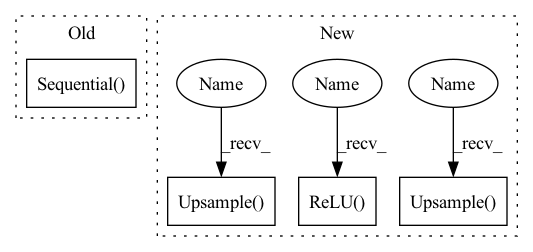

Pattern ID :1972

Before Change
if stride == 1:
self.model = self.model_base
else:
self.model = nn.Sequential(
self.model_base,
nn.AvgPool2d(2, stride=stride, padding=0)
)
// add Bypass
self.bypass_conv = nn.Conv2d(
in_channels, out_channels, 1, 1, padding=0)
self.bypass = nn.Sequential(
After Change
self.model1 = nn.Sequential(
self.bn1,
nn.ReLU(),
nn.Upsample(scale_factor=2) if stride > 1 else nn.Identity(),
self.conv1,
)
self.model2 = nn.Sequential(
self.bn2,
nn.ReLU(),
nn.Dropout(dropout) if dropout > 0 else nn.Identity(),
self.conv2
)
self.bypass = nn.Sequential()
if stride != 1:
self.bypass = nn.Upsample(scale_factor=2)
def forward(self, x_in, noise_embed):
batch = x_in.shape[0]
x = self.model1(x_in)
In pattern: SUPERPATTERN
Frequency: 3
Non-data size: 4
Instances
Fragment ID: 4669894
Project Name: janspiry/image-super-resolution-via-iterative-refinement
Commit Name: e4bf6add27ee36067514a0b3debcd3bf98dbaa17
Time: 2021-08-03
Author: jiangliangwei@tetras.com
File Name: model/modules/unet.py
Class Name: ResBlockDis
Method Name: __init__
Parent Class: nn.Module
Fragment ID: 4669893
Project Name: avivga/overlord
Commit Name: 3ed2f68af62bf260d2133b58ec59b0a19e7dd2c0
Time: 2020-07-19
Author: avivga@gmail.com
File Name: model/modules.py
Class Name: Generator
Method Name: __init__
Parent Class: nn.Module
Fragment ID: 4669887
Project Name: janspiry/image-super-resolution-via-iterative-refinement
Commit Name: 12c2447fe9d989a51a1674b23fbb225c783186e5
Time: 2021-08-03
Author: lw_jiang@foxmail.com
File Name: model/modules/unet.py
Class Name: ResBlockDis
Method Name: __init__
Parent Class: nn.Module
Fragment ID: 4669886
Project Name: janspiry/image-super-resolution-via-iterative-refinement
Commit Name: e4bf6add27ee36067514a0b3debcd3bf98dbaa17
Time: 2021-08-03
Author: jiangliangwei@tetras.com
File Name: model/modules/unet.py
Class Name: ResBlockDis
Method Name: __init__
Parent Class: nn.Module